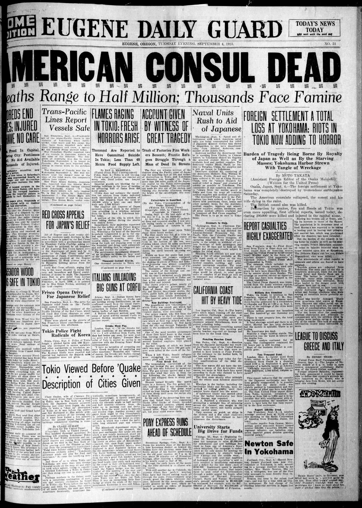
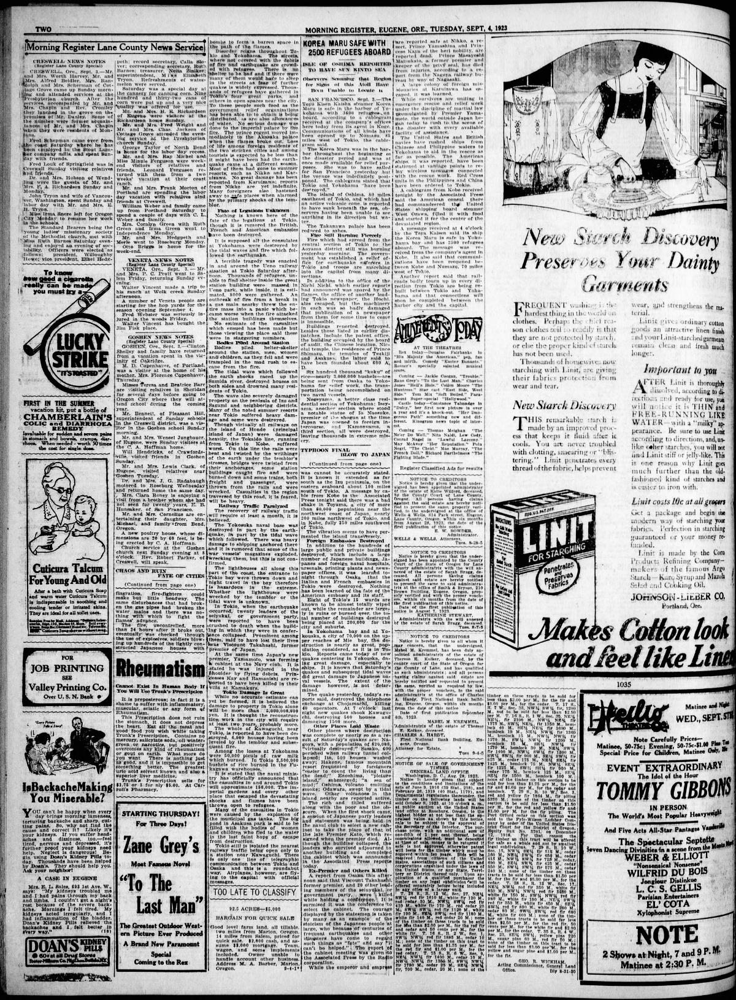

HN HN-435 · September 6, 1923 · Disasters, Accidents & Emergencies > Earthquakes & Volcanic Disasters > Earthquakes
Source: Walkerton Independent, p. 1 — original page; Government of Japan's disaster review.
Report: The paper repeated dispatches from Osaka and Shanghai claiming 250,000 Japanese people dead, with devastated Tokyo and Yokohama, firestorms, collapsed buildings, stories of refugees trapped, and additional uncorroborated reports of vanished islands or military facilities.
Assessment: The Great KantÅ earthquake occurred September 1, 1923. Japan's Cabinet Office now reports about 105,000 dead or missing, not the dispatch's 250,000 deaths. This is an especially stark illustration of wartime-style disaster rumor and premature mass-casualty extrapolation; the fires were indeed a major killer, but not every extraordinary eyewitness anecdote was verified.
Authentic scans retrieved from Historic Oregon Newspapers (University of Oregon). Article crops are located using the archive's own OCR word coordinates and rendered at native crop resolution; page scans are reduced-size access renditions. No images were generated, mocked, or retouched.


Not yet acquired. Queued for provider-specific acquisition testing (see source-acquisition manifest).
URL (preserved verbatim): https://newspapers.library.in.gov/?a=d&d=WLKI19230906.1.1
Saved research report: Historical_Newspaper_Event_Research_428-452_2026-10-23.md
Evidence note: A newspaper report means a historical publication made a claim; it does not establish that claim as fact. Contemporary reporting is separated from later scholarly context and our own assessment.